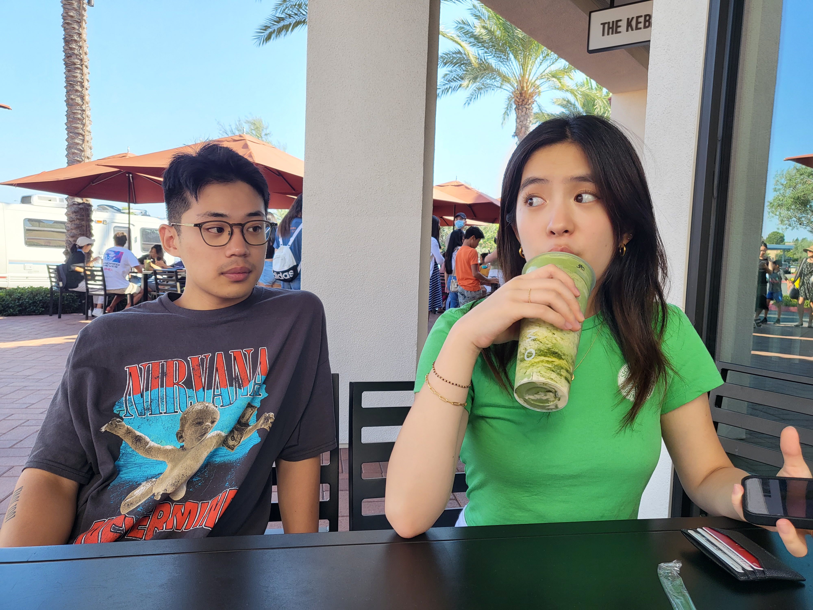
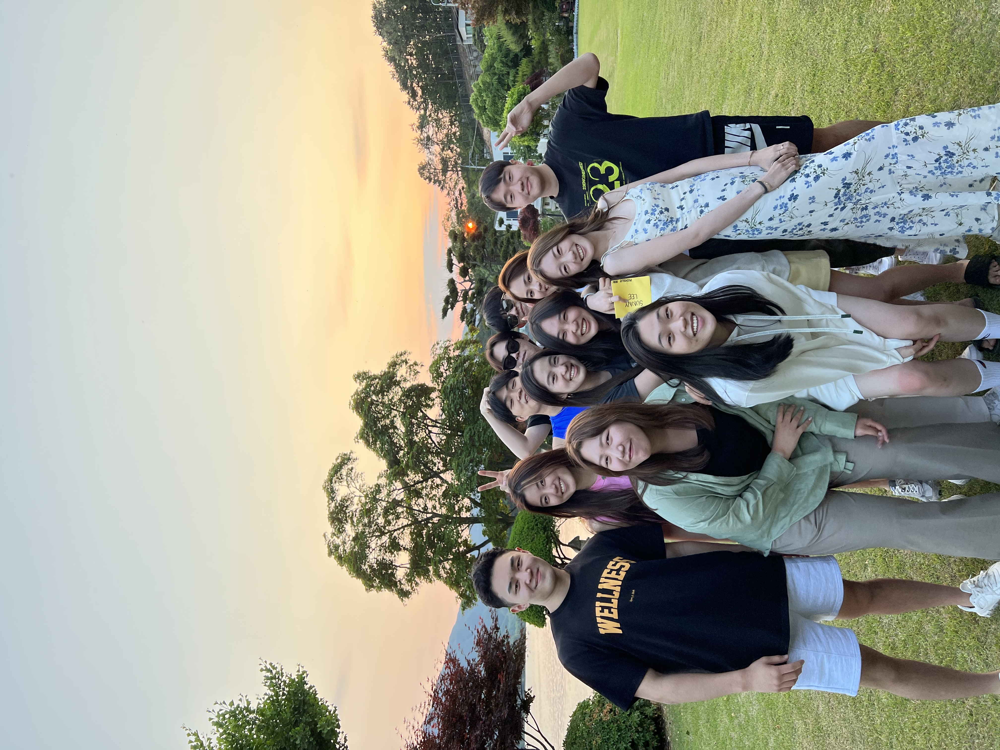
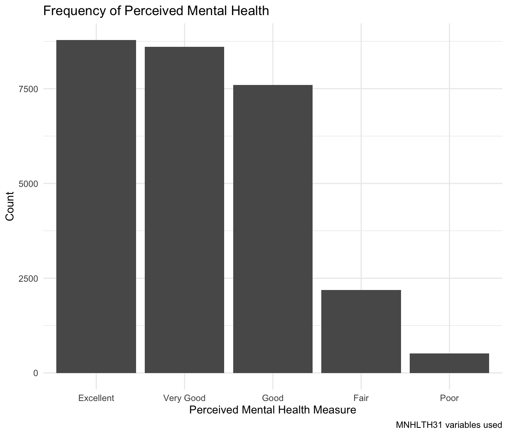

Learn more about Sunny Lee
1 Introduction
Welcome to my website. This site documents my life as a college student at UChicago. This is the most authentic and only chance you will get to learn about the real side of me. Get excited! There will be a brief overview of my childhood, familiy and friends, academic passions (#sec-student-sunny), and other parts of my life (#sec-other).
2 Childhood
Not invited to analyze my childhood Freudian style, but it helps to understand what kind of person I am.
3 Family and friends
As a huge extrovert, family and friends are an important part of my life. People listed on here are my rock and the source of energy in my life, so…it’s a pretty important section.



4 Student Sunny
I love school. Not that I’m a nerd. But intellectual stimulation is a core part of my life. It keeps me going. As Bill Gates once said, “I don’t want my brain to stop working.” Gates and I have this in common. My greatest fear is not being able to think. In true Descartes spirit, I think, therefore I exist or cogito ergo sum.
I go to the University of Chicago, and I am a pre-med student majoring in Biology and Comparative Human Development.

Confused what a comparative human development major is? You can find out here:
4.1 Some of my research work with R
For example, my research passion is the social determinants of health. I made a quick example of how my research would look like to showcase the type of career path I want to go into.
###Brief description and methodology of research project
My research project involves utilizing a publicly available Medical Expenditure Panel Survey (MEPS) database to extract relevant variables and find the relationship between them through statistical analyses. For example, in the 2021 Full Year Consolidated file in MEPS, there are variables that measure the social determinants of health, perceived mental health, and demographic information such as sex and race.
Out of the numerous variables, I make a new database with only the variables of interest using R. In this mini research project I am able to showcase, I only included social determinants of health factors that measure an individual’s social support.
Here are the variables I used: “DUPERSID”, “SDCHURCH”, “SDCOMM”, “SDCOMPAN”, “SDFAMILY”, “SDFRIENDS”, “SDGETTGT”, “MNHLTH31”, “SEX”, “RACETHX”.
The name of “MNHTLH31” was changed to “Perceived_Mental_Health” to make it more intuitive in my dataframe, and I added a new column “Social_Support_Sum” that takes all SDOH variables and sums up the numbers into the column. The less the number, the less social support they have.
To explore more about data collection method and genreal decription of MEPS, click here: 2021 Consolidated Full Year File document
To learn more about the variables, click here: 2021 Consolidated Full Year File codebook
###Research using R
Here is how my RStudio screen would look like.
#|label: source-Rscript
# Source R script including data information
source("student-sunny-data.R")
Attaching package: 'dplyr'The following objects are masked from 'package:stats':
filter, lagThe following objects are masked from 'package:base':
intersect, setdiff, setequal, union── Attaching core tidyverse packages ──────────────────────── tidyverse 2.0.0 ──
✔ forcats 1.0.0 ✔ stringr 1.5.1
✔ ggplot2 3.5.1 ✔ tibble 3.2.1
✔ lubridate 1.9.4 ✔ tidyr 1.3.1
✔ purrr 1.0.2
── Conflicts ────────────────────────────────────────── tidyverse_conflicts() ──
✖ dplyr::filter() masks stats::filter()
✖ dplyr::lag() masks stats::lag()
ℹ Use the conflicted package (<http://conflicted.r-lib.org/>) to force all conflicts to become errors
Attaching package: 'scales'
The following object is masked from 'package:purrr':
discard
The following object is masked from 'package:readr':
col_factor
Attaching package: 'psych'
The following objects are masked from 'package:scales':
alpha, rescale
The following objects are masked from 'package:ggplot2':
%+%, alpha
Loading required package: Matrix
Attaching package: 'Matrix'
The following objects are masked from 'package:tidyr':
expand, pack, unpack
Attaching package: 'kableExtra'
The following object is masked from 'package:dplyr':
group_rows
Suggested APA citation: Thériault, R. (2023). rempsyc: Convenience functions for psychology.
Journal of Open Source Software, 8(87), 5466. https://doi.org/10.21105/joss.05466
Attaching package: 'flextable'
The following objects are masked from 'package:kableExtra':
as_image, footnote
The following object is masked from 'package:purrr':
compose# Produce the table as an APA formatted table with rempsyc
h233_categorized.long %>%
group_by(ivanddv) %>%
summarize(mean = mean(value),
median = median(value),
sd = sd(value),
min = min(value),
max = max(value),
range = max-min,
range = diff(range(value))
) %>% nice_table()ivanddv | mean | median | sd | min | max | range |
|---|---|---|---|---|---|---|
Perceived_Mental_Health | 2.08 | 2.00 | 1.22 | -8.00 | 5.00 | 13.00 |
Social_Support_Sum | 8.36 | 10.00 | 6.83 | 0.00 | 28.00 | 28.00 |
4.1.1 Summary, statistics of samples
sex_table <- as.data.frame(table(h233_categorized$SEX))
colnames(sex_table) <- c("Sex", "Count")
print(sex_table, row.names = FALSE) Sex Count
Male 13423
Female 14913race_table <- as.data.frame(table(h233_categorized$RACETHX))
colnames(race_table) <- c("Race", "Count")
print(race_table, row.names = FALSE) Race Count
Hispanic 6798
Non-Hispanic White 15023
Non-Hispanic Black 4071
Non-Hispanic Asian 1385
Non-Hispanic Other 1059h233_categorized# A tibble: 28,336 × 11
DUPERSID SDCHURCH SDCOMM SDCOMPAN SDFAMILY SDFRIENDS SDGETTGT
<chr> <dbl> <dbl> <dbl> <dbl> <dbl> <dbl>
1 2320005101 0 4 3 3 4 0
2 2320005102 -1 -1 -1 -1 -1 -1
3 2320006101 0 2 3 2 2 6
4 2320006102 1 3 1 3 4 6
5 2320006103 0 1 1 1 3 3
6 2320012102 0 4 2 1 1 -15
7 2320013101 0 2 2 1 1 2
8 2320018101 6 1 3 1 2 0
9 2320018102 6 1 1 2 2 2
10 2320018103 0 3 3 2 4 0
# ℹ 28,326 more rows
# ℹ 4 more variables: Perceived_Mental_Health <dbl>, SEX <fct>, RACETHX <fct>,
# Social_Support_Sum <dbl>#|label: bar-plot
# dplyr package has filter() function
library(dplyr)
# Define factor labels
mental_health_labels <- c("1" = "Excellent",
"2" = "Very Good",
"3" = "Good",
"4" = "Fair",
"5" = "Poor")
# Filter out invalid values and recode as factors
h233_filtered <- h233_categorized %>%
filter(Perceived_Mental_Health %in% 1:5) %>%
mutate(Perceived_Mental_Health = factor(Perceived_Mental_Health,
levels = 1:5,
labels = mental_health_labels))
# Load necessary package to make bar graph
library(ggplot2)
# Create the plot
ggplot(h233_filtered, aes(x = Perceived_Mental_Health)) +
geom_bar() +
labs(title = "Frequency of Perceived Mental Health",
x = "Perceived Mental Health Measure",
y = "Count",
caption = "MNHLTH31 variables used") +
theme_minimal()
From this bar graph, we can see that the distribution of perceived mental health in individuals is more positive than negative.
4.1.2 Correlation statistics
5 Other passions and quirks
Yogi, foodie, #trackstar, dog mom, neat freak, and more